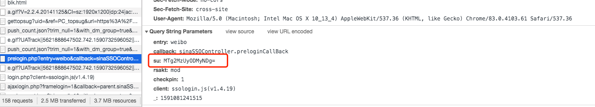
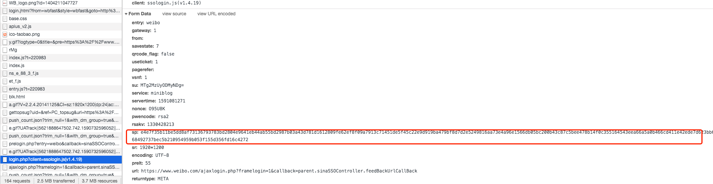
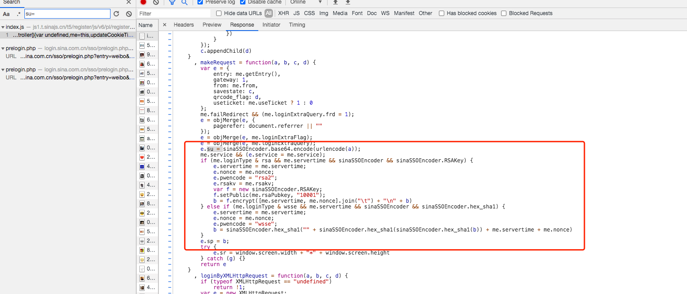
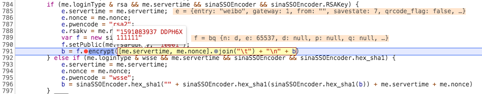
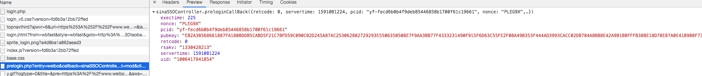
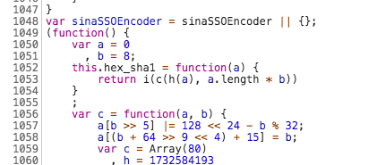
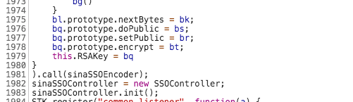
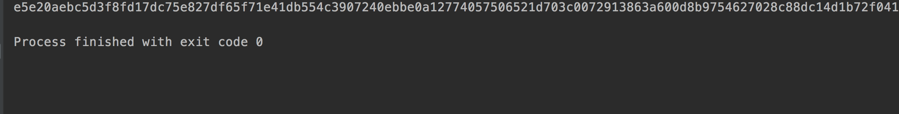
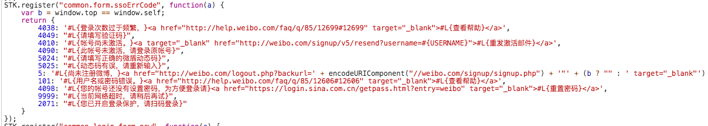

JS逆向学习-*博登陆加密参数
*博登陆加密参数
aHR0cHM6Ly93d3cud2VpYm8uY29tL2xvZ2luLnBocA==
分析请求
打开网页进入 Chrome 调试模式下并输入错误的用户名和密码发现有两个login请求


先对这两个请求进行模拟，分别需要对 su 和 sp 参数进行逆向
全局搜索 ”su=“ 定位到了下图中标记的位置，且 sp 的加密方式也定位到了

逆向
通过上面的分析流程定位到了加密位置，且发现 su 其实是通过base64进行了编码
接下来我们通过断点查看 sp 的处理方式

这里可以看到加密需要的参数为 rsaPubkey、 servertime、 nonce 和 密码，接下来我们再看下面的截图

到这里已经找到加密需要的全部参数了，最后就是扣代码
将 sp 加密的代码复制到webstorm中并运行报错“sinaSSOEncoder is not defined”
找到sinaSSOEncoder的定义部分


1048 ～ 1981行都是sinaSSOEncoder的定义代码
然后再运行

搞定
最后要注意的是后续的登陆流程是根据 sp 参数所属请求响应的 retcode 判断的，如下图：

总结
其实参数加密没什么难度，完善后续登陆操作需要对验证码识别做优化
本博客所有文章除特别声明外，均采用 CC BY-SA 4.0 协议 ，转载请注明出处！